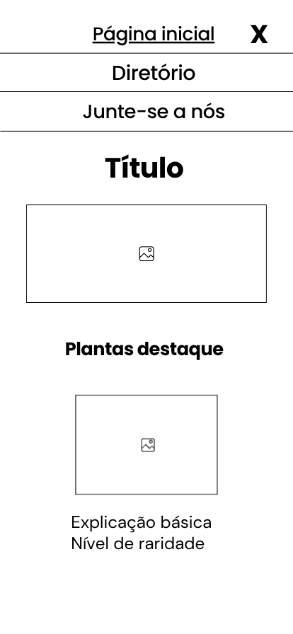
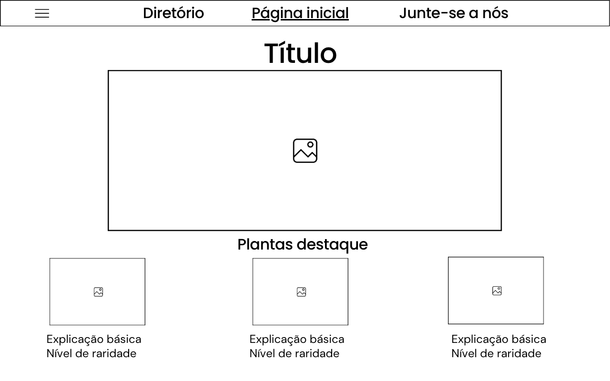

1. Nome do Site
Nome escolhido: Flora&Co — Comunidade de Cuidados com Plantas
Razão da escolha: O nome "Flora&Co" é direto e explicativo. Transmite imediatamente a ideia de uma biblioteca sobre a flora cotidiana e espécies exóticas, unindo entusiastas e promovendo a preservação por meio do conhecimento e colaboração.
2. Finalidade do Site
O site tem co objetivo de educar e engajar pessoas interessadas no cultivo e manutenção de plantas comuns e exóticas. Ele fornecerá uma biblioteca com filtros de busca, orientações essenciais de rega e iluminação para evitar a perda de espécies no dia a dia, e um formulário de filiação para membros da comunidade que desejam receber atualizações e colaborar com sugestões de dados.
3. Cenários
- Cenário 1: "Adquiri uma planta exótica para o meu apartamento, mas não sei qual a frequência correta de rega nem a quantidade de luz solar que ela necessita. Como encontro os cuidados essenciais para que ele continue saudável?"
- Cenário 2: "Sou um apaixonado por plantas raras e gostaria de me filiar à comunidade Flora&Co para receber destaques semanais de plantas fáceis de cuidar e sugerir novos dados, sobre espécies da minha região."
4. Esquema de Cores
A paleta foi selecionada em tons naturais e neutros para transmitir sensação de natureza, vida e equilíbrio visual:
5. Tipografia
Fontes carregadas diretamente via Google Fonts e aplicadas neste documento:
- Montserrat (Sans-serif): Aplicada aos títulos (H1, H2, H3) e elementos de navegação por sua estrutura marcante.
- Roboto (Sans-serif): Aplicada ao corpo dos textos, parágrafos e listas para garantir facilidade de leitura em telas móveis e computadores.
6. Wireframe (Esboço do Layout)
Planejamento visual das estruturas mobile e desktop para a página principal:
Visualização Mobile (Celular)

Visualização Desktop (Computador)
